15 best campgrounds to visit
When you want to take a break or say your vacation just came up, you might want to take the cheaper way out rather than pay for an expensive hotel. The cheaper way out may not necessarily mean the least amount of luxury. In this list, we are going to start off with 5 of the best campgrounds in Myrtle Beach. Myrtle Beach has the reputation of having the best campgrounds around so it makes most sense to start off with that city.
1. Lakewood Campground
Location 5901 South Kings Highway, Myrtle Beach, SC 29575.
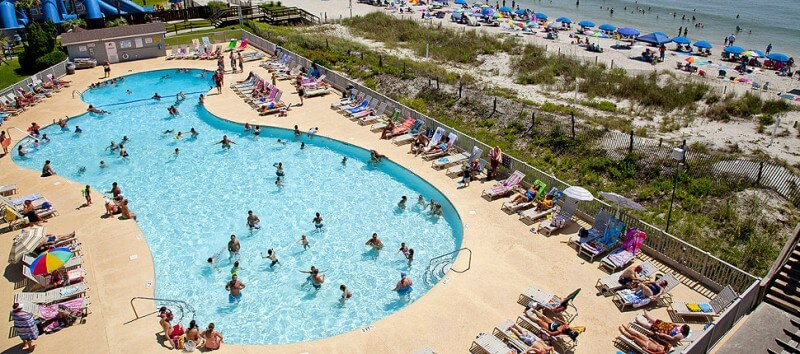Lakewood Campground has been named named one of the Top 5 RV Resorts in the nation by a leading RV magazine. This Campground sits on about 200 acres of land on the oceanfront. It has the following amenities available:
If you choose the Lakewood Campground in Myrtle Beach as your next campground getaway, i'm sure you will not regret it.
2. Myrtle Beach Travel Park Campground
Location 10108 Kings Road, Myrtle Beach, SC 29572.

The Myrtle Beach Travel Park is a great option for a vacation with its covered shelter that would be great to use for a family dinner. If you are the type of person who wants or need to worship while out and about, then you can be rest assured that there will be ministry and worship services.
Some of the offered amenities are:
3. Ocean Lakes Family Campground
Location 6001 South Kings Highway, Myrtle Beach, SC 29575.

If you decide to choose a campground in Myrtle Beach for your next Vacation, then you should consider the Ocean Lakes Family Campground. this campground has many activities to keep you busy for days. There are places of worship and also places for recreational cycling. Random activities but thats how good this campground is. It offers something for everyone.
Some of the offered amenities are:
4. Huntington Beach State Park
Location 16148 Ocean Hwy, Murrells Inlet, SC 29576.
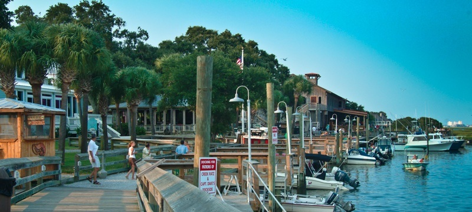Known as A jewel of South Carolina's Grand Strand, the Huntington Beach State Park sits on 2500 acres of land. You do not have to worry about all the hustle and bustle of the beaches to the north. Instead you are fifteen miles away from downtown Myrtle Beach. You can probably see alligators or the hundreds of beautiful birds that reside in the area. There is also a place called Atalaya while you are here.
5. Bucksport Plantation Marina & RV Campground
Location 135 Bucksport Rd Conway South Carolina, 29527.
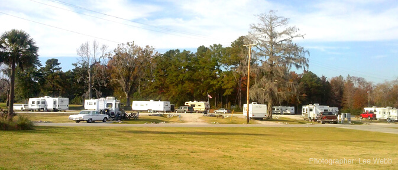
Some of the offered amenities are:
That was the first five campgrounds that i recommend and they are all located in Myrtle Beach. Below, the list will begin at number six and will be about ten more campgrounds that are all over the united states.
6. Ludington State Park
Location 8800 W. M-116, Ludington, MI 49431.
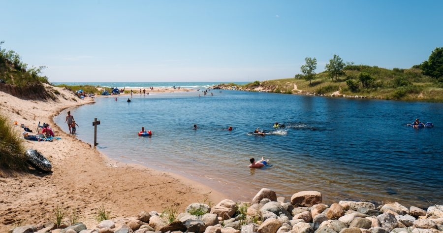The Ludington State Park is very large, comprising of about 5,300 acres of beautiful sand dunes, ponds, marchlands, shoreline vista and forests. This campground is smacked dab in the middle of two lakes, Lake Michigan and Hamlin Lake. The Ludington State Park has 3 campgrounds and they all comprise of a total of 344 modern campsites. It is situated between Hamlin Lake and Lake Michigan with several miles of shoreline and beaches on both bodies of water. The three campgrounds Ludington State Park -- Pines, Cedar and Beechwood -- have a combined total of 344 modern campsites. All of the campsites have electricity and there are modern shower and bathroom facilities
Some of the offered amenities are:
7. Grand Canyon National Park
Location northwest corner of Arizona, close to the borders of Utah and Nevada.
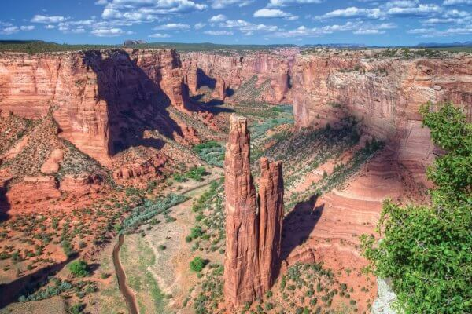Taking a break at the Grand Canyon National Park would be a great feeling as it is like giving Homage to one of the best and greatest US campgrounds. The many campgrounds around offer many amenities and it is also surrounded by many luxurious hotels for you to choose from.
8. Bowman Lake Campground
Location North Fork area of Glacier National Park.

This campground is located near the shore of Bowman Lake. It is within trees, this provides a whole lot of shade and maybe some privacy. If you are in search of some privacy, then this is the place for you as it is very remote. One thing to remember when coming here is to always pack enough bug repellent for you and your travel companions. A bug net would also be very helpful.
Some of the offered amenities are:
9. Blackwoods Campground
Location State Highway 3, Bar Harbor, ME 04609.
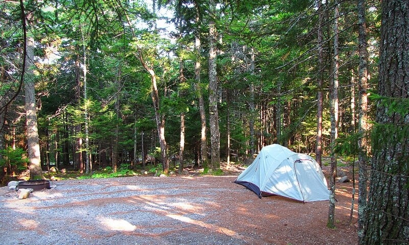Blackwoods Campground has approximately 306 camping sites within walking distance to the Park Loop Road and the ocean. When you arrive at this campground, proper identification and registration is required to stay. You will also be required to pay both entrance and recreational use fees (camping). You will be limited to only six individuals, two tents, and one vehicle. You will also need to keep in mind that Rvs over 35' are not permitted. It might be necessary to indicate that the price per site is $20, per night during the season of May 1 - October 31. Then $10 during the season of April and November. Water and electricity is also not provided on the campground so you will have to plan ahead. A good size generator will come in very handy. Also a large enough container to house water would suffice.
Some of the offered amenities are:
10. Moraine Campground
Location Moraine Park Road Estes Park, CO 80517.
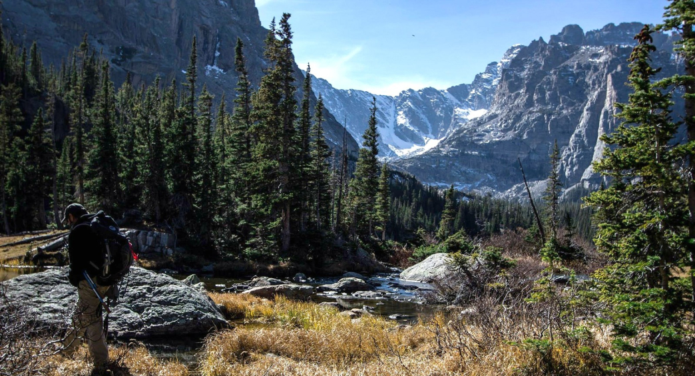The Moraine Park Campground provides beautiful views of the surrounding mountains. This campground can will have you relaxed in no time.
Some of the offered amenities are:
11. Chickasaw Campgrounds
Location 20 Cabin Ln #4128, Henderson, TN 38340.
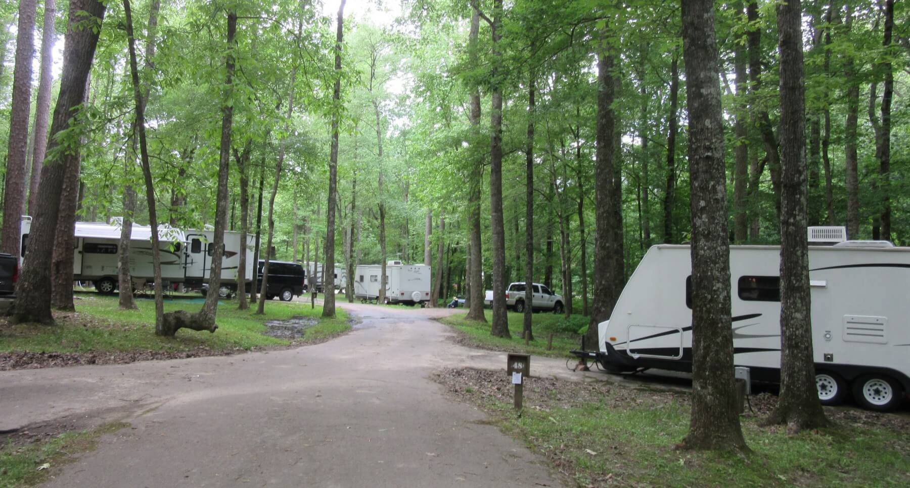There are a total of six campgrounds in Chickasaw. All the different campgrounds have different types of amenities and it is up to you to do a little research and find out which one best suits your needs. If you have a large Rv then the best bet would be to use the campgrounds at the Lake of the Arbuckles. If you rather use tents then the three campgrounds of the Platt Historic District will be perfect.
Some of the offered amenities are:
12. Isle Royale Campgrounds
Location Isle Royale National Park is on an island in Lake Superior.
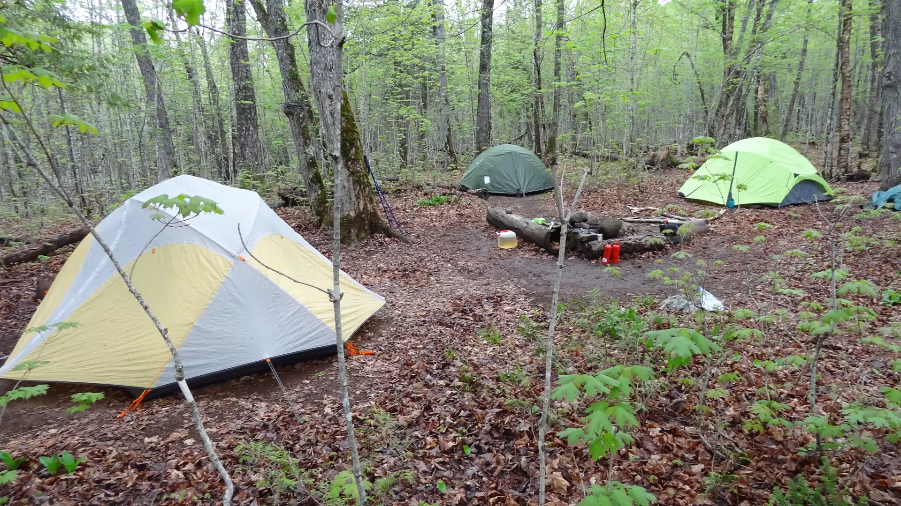If you want solitude or simple outdoor adventures, then this campground is for you. The island is home to a fluctuating moose population and a very small wolf population. All different types of adventurers come here to enjoy the sweet surroundings.
Some of the offered amenities are:
13. False Cape State Park
Location 20 Cabin Ln #4128, Henderson, TN 38340.
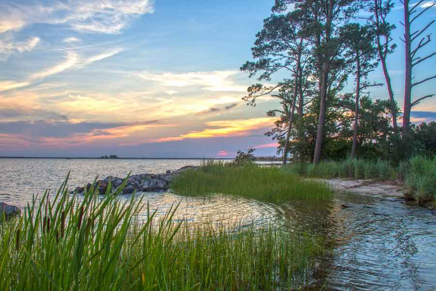False Cape can only be reached by hiking, biking, small boats, or their tram-service, through Back Bay National Wildlife Refuge. Remember this as you will not be able to park at all here.
14. Isle Royale Campgrounds
Location 2500 Shore Dr., Virginia Beach, VA 23451.
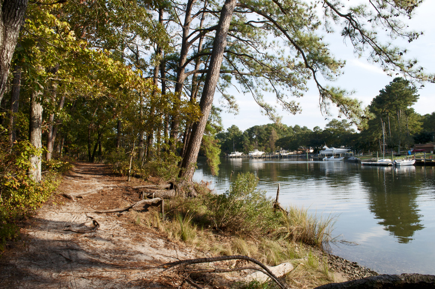If you want solitude or simple outdoor adventures, then this campground is for you. The island is home to a fluctuating moose population and a very small wolf population. All different types of adventurers come here to enjoy the sweet surroundings.
Some of the offered amenities are:
15. Kring Point State Park Campground
Location 25950 Kring Point Road, Redwood, New York.
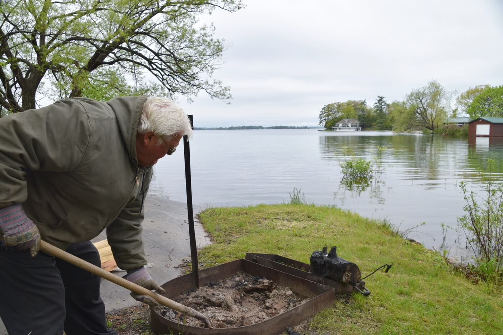About half of the campsites here are beside the waterfront. You will not be disappointed with how much things you will have to keep you busy throughout your stay.
Some of the offered amenities are:
To have your comment or suggestion posted here, send us a message in the contact section.